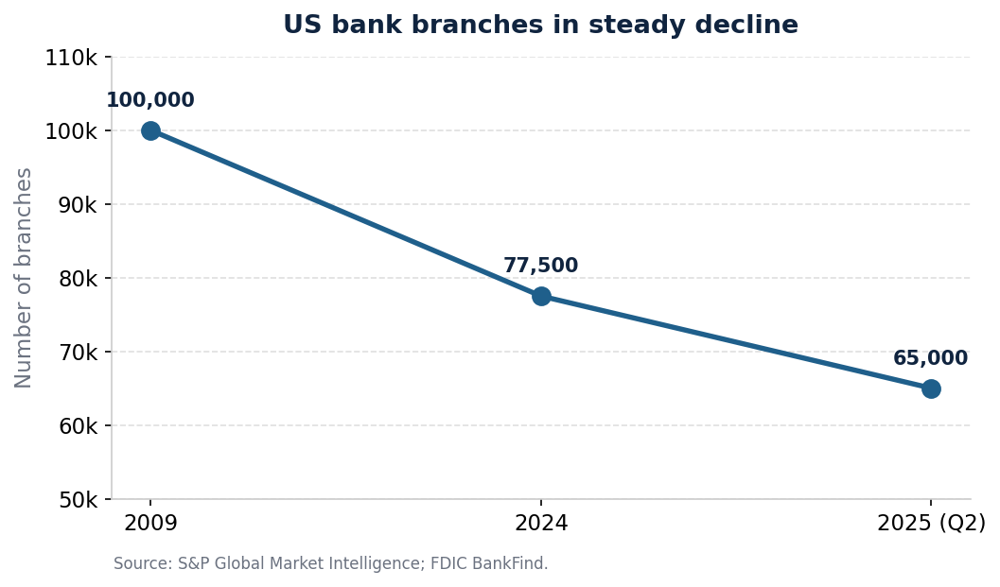
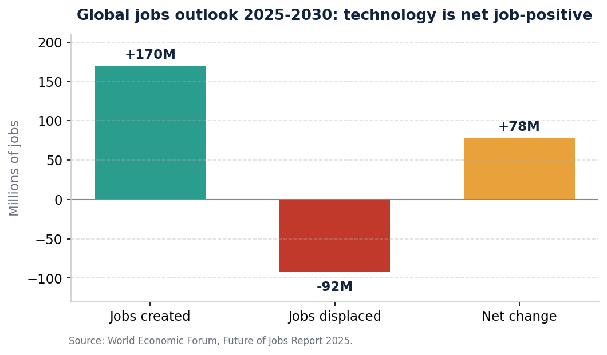
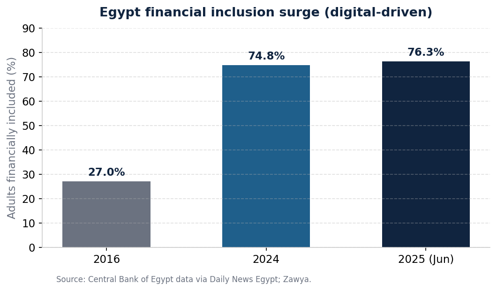

Technology and Banking, Explained Simply
This page holds everything behind our two course projects, written in plain English. Every time we use a technical word, we stop and explain what it means in everyday language first. You do not need any background in banking or computers to follow along.
Two everyday words to know first
Almost everything on this page comes back to two ideas. Let us pin them down in plain language before we go further.
That is the whole foundation. Keep those two in mind and the rest follows easily. There is also a full Word List at the bottom if you ever want a quick reminder of any term.
What we were asked to do
Our course gave us two separate tasks. This page covers both of them, fully.
Project 1 · A written report
We had to study how computers and automation changed the jobs in one industry. We chose banking. We looked at which jobs shrank, which new jobs appeared, and whether it is fair to say technology destroys jobs.
We delivered this as a 7-page Word document with charts and sources.
Project 2 · A short slideshow
We had to pick a company and judge how well its technology choices support its overall business plan. We chose the National Bank of Egypt, the country's biggest bank. Then we gave our own advice on what it should do next.
We delivered this as a 4-slide PowerPoint, plus a clickable web version.
In short, Project 1 asks: How did technology change the jobs people do in banks? Project 2 asks: Does the National Bank of Egypt's technology actually help it reach its goals?
Downloads
The work we hand in, in every format, plus our raw notes. "Format" just means the kind of file: a Word document, a PowerPoint, a PDF (a fixed, print-ready page), or a web page.
Word file you can edit PDFProject 1, the report
PDF, easy to read or print PPTXProject 2, the slides
PowerPoint you can edit PDFProject 2, the slides
PDF of the slideshow HTMLProject 2, clickable version
Opens in any browser, even offline MDOur research notes
Every fact with its source
1. The big question
Banks run almost entirely on information: account balances, payments, records. Because of that, banks were among the very first businesses to put computers to heavy use, and they have kept doing so ever since.
Here are a few tools that show up again and again in this story, explained simply:
So our question for this project is simple: How did all this technology change the jobs people do in banks? We look at the hard numbers, then at how the daily work itself changed, then at which jobs faded and which new ones grew. We use worldwide data, with examples from Egypt. Finally, we tackle the worry that technology just throws people out of work.
2. What the numbers show
The clearest sign of technology's effect is the slow disappearance of the bank teller and the branch (the local bank office you walk into). In the United States, the number of tellers has dropped by nearly 30 percent since 2010. The US government's labour statistics office expects it to fall another 13 percent between 2024 and 2034. The number of branches has shrunk just as fast, from about 100,000 in 2009 to roughly 77,500 at the start of 2024 and fewer than 65,000 by the middle of 2025.

How to read this chart: the line goes down over the years. Each dot is a count of bank branches: 100,000 in 2009, down to 77,500 in 2024, down to 65,000 by mid-2025. A falling line here means banks keep closing local offices because people now bank on their phones.
The reason is simple swapping: tasks that used to need a human teller are now done by machines and apps. Worldwide, automated chat programs (called chatbots, which answer customer questions by text instead of a human) and similar tools already handle up to 65 percent of routine, everyday banking requests.
But here is the part people often miss. The same technology that removes some jobs also creates others. The World Economic Forum (an international research group that studies the global economy) expects technology and other changes to create about 170 million jobs around the world between 2025 and 2030, while removing about 92 million. That is a net gain of roughly 78 million jobs. "Net" just means the result after you subtract the losses from the gains.

How to read this chart: the tall green bar on the left is the new jobs created (170 million). The red bar in the middle dips below the line to show jobs lost (92 million). The gold bar on the right is what is left over after you subtract one from the other: a gain of 78 million. The point is that the green and gold bars are bigger than the red one, so the world ends up with more jobs, not fewer.
The headline numbers in one place
| What we measured | The figure | Where it comes from |
|---|---|---|
| US bank tellers since 2010 | Down nearly 30% | Burning Glass Institute |
| US tellers expected change, 2024 to 2034 | Down 13% | US Bureau of Labor Statistics |
| US bank branches, 2009 to 2025 | 100,000 down to below 65,000 | S&P Global; FDIC |
| Routine requests now handled by machines | Up to 65% | CoinLaw |
| Net new jobs worldwide, 2025 to 2030 | +78 million | World Economic Forum |
| Job skills that will need updating by 2030 | 39% | World Economic Forum |
3. How the daily work changed
Numbers only tell half the story. Technology did not just cut some jobs, it changed what the remaining jobs feel like day to day.
The teller who once spent the day counting cash is now expected to be more of an adviser: someone who helps customers with bigger decisions, sells them suitable products, sorts out tricky problems, and shows them how to use the bank's apps. The boring, repeatable parts moved to machines. The parts that are hard for a machine, such as giving advice, using good judgement, building trust, and handling a relationship, became the main job.
This means staff need new skills. The World Economic Forum estimates that 39 percent of the skills people use at work today will need to be updated or replaced between 2025 and 2030. Even a traditional bank job now expects comfort with apps and data, and a basic understanding of cybersecurity (protecting computers and customer information from hackers and online attacks).
4. The jobs that shrank or disappeared
The jobs most at risk all share one feature: they are built on routine, rule-following, repeat-the-same-thing tasks, which is exactly what software does cheaply and quickly. The clearest examples:
- Bank tellers and cashiers, replaced by cash machines, phone apps, and self-service.
- Data-entry and cheque-processing clerks (people who typed information from paper into the computer, or processed paper cheques). Software now scans and handles this automatically.
- Back-office checking staff. The "back office" is the behind-the-scenes part of a bank that processes paperwork; customers never see it. Much of its routine checking is now automated.
- Manual bookkeepers and filing staff, made unnecessary by digital records that update themselves.
- Routine call-centre agents, increasingly replaced by chatbots for simple, first-line questions.
5. The new jobs that grew
At the same time, technology created whole new kinds of work that barely existed a generation ago. The banking industry is now a big employer of technology specialists. The table below puts the shrinking jobs next to the growing ones, with a short note on what each growing role means.
| Jobs that shrank | Jobs that grew (and what they do) |
|---|---|
| Bank tellers and cashiers | Data scientists and data engineers: people who study large piles of data to find useful patterns. |
| Data-entry and cheque clerks | AI specialists: people who build and train the "smart" software. |
| Back-office checking staff | Fintech engineers: builders of finance apps. "Fintech" is short for financial technology, meaning tech-driven money services. |
| Manual bookkeepers and filing staff | Cybersecurity analysts: people who defend the bank from hackers. |
| Routine call-centre agents | Cloud engineers: people who run systems on rented internet computers (the "cloud," explained later). |
| Physical-branch support roles | RPA and compliance-tech specialists: people who automate routine tasks and use software to help the bank follow the rules. |
The pattern is steady: demand moves away from manual, repetitive tasks and toward people who build, protect, and make sense of the technology that now runs the bank.
6. The Egypt story
Egypt is a clear, recent example of all this happening fast. First, one key idea:
Egypt pushed hard to bring more people into the banking system, mostly through phones rather than new branches. The share of adults with access to financial services rose from about 27 percent in 2016 to 74.8 percent by the end of 2024 and 76.3 percent by mid-2025.

How to read this chart: each bar is taller than the one before it. In 2016 only about 1 in 4 adults (27 percent) had access. By 2025 it is about 3 in 4 (76.3 percent). Taller bars over time mean far more people are now inside the banking system, mostly thanks to phone-based services.
The tools behind this are striking. By mid-2025, InstaPay (an Egyptian service that lets you send money instantly between banks from your phone, any time of day) had passed 16 million users and 1.1 billion transfers worth EGP 2.4 trillion. The national Meeza card (Egypt's own payment card, similar to a Visa or Mastercard but run locally) had passed 43.5 million cards. Mobile wallets (money stored on your phone that you can pay with directly) reached 55.5 million. Big banks, including the National Bank of Egypt, poured money into apps and tech. The result is the same as everywhere else: routine branch jobs are under pressure, while demand grows for app builders, data analysts, and security specialists.
7. So, does technology destroy jobs?
Many people worry that computers simply put humans out of work. The banking story gives a more careful, and more hopeful, answer.
The classic example is the cash machine. When ATMs spread in the 1990s and 2000s, everyone predicted the end of the bank teller. The opposite happened at first. Because ATMs made each branch cheaper to run, banks opened more branches, so the total number of tellers held steady for years, even as their work shifted toward sales and helping customers. Technology changed the job before it cut the headcount.
The big-picture numbers point the same way. The roughly 92 million jobs expected to disappear worldwide by 2030 are more than balanced out by the roughly 170 million expected to appear, leaving a net gain of about 78 million jobs. The honest conclusion is that technology changes work far more than it destroys it. Old routine jobs fade, but new and often better-paid jobs appear, as long as workers get the chance to learn new skills.
So the real danger is not mass unemployment. It is a skills gap: the risk that people are not trained for the new roles fast enough. The banks and workers who do best are the ones who treat technology as a helper that takes over the boring tasks, freeing people to focus on advice, problem-solving, and trust, which are the things customers still value most.
8. The takeaway
Technology has reshaped banking jobs more than almost any other force in the industry's history. In plain terms: it cut the number of tellers and branches and automated much of the back-office paperwork; it turned the jobs that remain into advice-and-service roles; it retired some old jobs entirely while creating new ones in data, AI, and security. Egypt shows the same pattern arriving fast in a developing country. The lesson for banks and for the people who work in them is clear: technology does not end careers in banking, it changes them, and it rewards those who are ready to keep learning.
The bank's overall plan
For the second project we picked the National Bank of Egypt, usually shortened to NBE. It was founded in 1898 and is the largest bank in Egypt. First, a couple of numbers explained:
A company's strategy is simply its overall game plan: what it is trying to achieve. NBE's plan rests on four main goals.
1. Bring more people into banking
Give ordinary and poorer Egyptians easy, cheap access to accounts and small loans (the financial inclusion idea from earlier).
2. Help fund the country
Pay for big national projects, roads and infrastructure, and smaller businesses. (A small or medium-sized enterprise, or SME, just means a smaller company, not a giant one.)
3. Grow through digital and serve customers well
Offer fast, around-the-clock, personalised banking on phones and online, and win over younger, tech-comfortable customers.
4. Be responsible and sustainable
Run the bank in a way that is good for the economy, the environment, society, and honest management. NBE calls its version of this the EESG framework (economic, environmental, social, governance). "Governance" means how honestly and carefully the company is run.
The bank's technology
NBE runs a large, serious set of computer systems. We grouped them into four areas. Some of the names below are technical, so each one is explained in plain words.
The core engine
- Core banking system: the main computer system that runs every account and transaction. NBE uses a well-known one called Oracle Flexcube. It processes things in real time, meaning instantly, as they happen.
- ERP and HRMS: ERP (enterprise resource planning) is one big system that runs core operations like finance. HRMS handles staff records and pay.
Ways customers connect
- The NBE Mobile phone app and Al Ahly Net online banking website.
- NBE PhoneCash, an e-wallet (money kept on your phone to pay with). Bills can be paid through Fawry, a popular Egyptian bill-payment service.
- A nationwide network of cash machines and branches.
New ideas and partners
- With Mastercard, NBE introduced AI "digital humans" (lifelike on-screen assistants), the first bank in the Middle East to do so.
- It led the launch of Apple Pay (paying by tapping your iPhone) in Egypt in 2024.
- It owns finance-tech arms, Al Ahly Momken (handling electronic payments) and Al Ahly Tamkeen (giving tiny loans, called microfinance, to people normal banks would turn away).
Keeping it safe
- A system from BIO-key that controls who is allowed to log in to what.
- MFA (multi-factor authentication: proving who you are with more than one check, like a password plus a code on your phone) and SSO (single sign-on: one login that opens many systems) for all 30,000 staff.
- A Security Operations Centre: a dedicated team and system that watches around the clock for hacker attacks and responds to them.
Do the plan and the technology match up?
This is the heart of the project. We take each of the bank's four goals and check whether its technology genuinely supports it. We rate each one as "Strong" (technology supports the goal well) or "Moderate" (partly, with room to improve).
| The bank's goal | The technology that supports it | Our rating |
|---|---|---|
| Bring more people into banking | The phone app, e-wallet, Meeza card, and the Momken and Tamkeen finance arms | Strong |
| Help fund the country | A large core system able to handle lending at national scale | Strong |
| Grow digitally and serve customers | NBE Mobile, the AI assistants, Apple Pay, and joined-up service across app, web, and branch | Strong |
| Be responsible and sustainable | Going paperless helps, but the "green" and responsibility side of its technology is still developing | Moderate |
Our advice to the board
Finally, we suggest six technologies the bank should consider next. Each is explained in plain words, and each one answers one of the "things to keep an eye on" above.
Generative AI
AI that can write and talk, like a smart assistant. Use it to answer customer questions and to help judge who can safely be given a loan (called credit scoring).
Better use of data
Study customer data to offer each person services that genuinely fit them, instead of one-size-fits-all.
The cloud
"Cloud" means renting computing power over the internet instead of buying and housing all the machines yourself. It is cheaper and grows more easily.
Open banking and APIs
An API is a safe doorway that lets two apps share information. "Open banking" lets customers securely connect their bank to other approved apps, creating a wider ecosystem.
Zero-trust security
A security approach that trusts no one automatically and checks every single access request. Pair it with AI that spots fraud the instant it happens.
Greener technology
Use energy-efficient data centres (the big buildings full of computers) and proper tools to measure and report the bank's environmental impact.
The live, clickable slideshow
The NBE project is also available as a full-screen slideshow you can click through in your browser. Use the arrow keys or swipe to move between slides, and press the F key for fullscreen.
All the facts, with their sources
Every number we used, grouped by topic, with where it came from. We gathered these from up-to-date sources on the internet.
Banking worldwide: the jobs that shrank
- US bank tellers: down nearly 30% since 2010; job adverts down about two-thirds. (Burning Glass Institute)
- US tellers expected to fall another 13% from 2024 to 2034. (US Bureau of Labor Statistics, the US government's jobs-data office)
- US bank branches: about 100,000 in 2009, about 77,500 at the start of 2024, below 65,000 by mid-2025. (S&P Global; FDIC, the US bank regulator)
- UK banks closed more than 450 branches in the first three months of 2025. (CoinLaw)
- Up to 65% of routine banking requests are now handled by machines, not people. (CoinLaw)
- Bank tellers and data-entry clerks are among the fastest-shrinking jobs worldwide. (World Economic Forum, Future of Jobs 2025)
Banking worldwide: the jobs that grew
- Finance-app builders, big-data specialists, and AI specialists are among the fastest-growing jobs to 2030. (World Economic Forum)
- About 170 million jobs created and 92 million removed worldwide, 2025 to 2030, a net gain of about 78 million. (World Economic Forum)
- 39% of the skills people use at work will need updating by 2030. (World Economic Forum)
- Roles in demand: automation specialists, security analysts, data scientists, cloud engineers, and rule-following ("compliance") tech specialists. (SRMSB; Built In; Indeed)
Egypt
- Access to financial services rose from about 27% (2016) to 74.8% (end 2024) and 76.3% (June 2025). (Daily News Egypt; Zawya)
- InstaPay (instant phone-to-phone money transfers): more than 16 million users and 1.1 billion transfers worth EGP 2.4 trillion by June 2025. (Business Tech News / Central Bank of Egypt)
- Meeza (Egypt's national payment card): more than 43.5 million cards by June 2025. (Transfi; AfricanEnda)
- Mobile wallets (money stored on phones): 55.5 million by June 2025. (Central Bank of Egypt, via news reports)
- Apple Pay launched December 2024; more than 40 million payments worth over EGP 32 billion by June 2025. (Central Bank of Egypt, via news reports)
The National Bank of Egypt (NBE)
- Founded 1898; Egypt's largest bank by almost every measure; third-largest among Arab banks.
- Total size (assets) of EGP 8.13 trillion at the end of 2024 (up from EGP 5.23 trillion a year earlier). (NBE accounts)
- About 665 branches and offices, nearly 20 million customers, about 30,000 staff. (NBE; BIO-key / StockTitan)
- Main systems: Oracle Flexcube (the core banking engine, since 2016), Oracle finance and staff systems, and an early experiment with a shared digital record system called blockchain (a tamper-resistant shared ledger), since 2018. (AppsRunTheWorld)
- Customer tools: NBE Mobile app, Al Ahly Net website, NBE PhoneCash wallet, and bill payment through Fawry. (Zawya; MenaFN)
- With Mastercard (September 2024): AI "digital humans," the first bank in the Middle East to use them. (Mastercard newsroom)
- Led the launch of Apple Pay in Egypt in 2024. (CIO; news reports)
- Finance-tech arms: Al Ahly Momken (electronic payments, 40,000 payment terminals) and Al Ahly Tamkeen (small loans for 100,000+ people). (The Startup Scene; Daily News Egypt)
- Security: a login-control system from BIO-key with multi-step login for 30,000 staff, plus a round-the-clock cyber-defence team. (Retail Banker International; StockTitan)
- Responsibility: an EESG plan and a climate-finance strategy. (Climate Lens Advisors; NBE Responsible Banking)
Sources
The full list of where our facts came from, written in APA style (a standard way of listing sources used in universities). You can click any link to read the original.
- American Enterprise Institute. (n.d.). What ATMs and bank tellers reveal about the rise of the robots and jobs. aei.org
- Burning Glass Institute. (n.d.). The case of the vanishing teller: How banking's entry-level jobs are transforming. burningglassinstitute.org
- CoinLaw. (2026). Bank branch closure statistics 2026: Global closures now. coinlaw.io
- Daily News Egypt. (2025, November 17). CBE's digital transformation push lifts financial inclusion to 76.3% in June 2025. dailynewsegypt.com
- Federal Deposit Insurance Corporation. (n.d.). BankFind suite: Bank structure changes. fdic.gov
- Mastercard. (2024, September). Mastercard and National Bank of Egypt collaborate on AI-powered digital employees. mastercard.com
- S&P Global Market Intelligence. (2025, May). Pace of US bank branch closures picks up in Q1 2025. spglobal.com
- StockTitan. (n.d.). National Bank of Egypt enhances enterprise security with MFA and SSO from BIO-key. stocktitan.net
- U.S. Bureau of Labor Statistics. (n.d.). Tellers: Occupational outlook handbook. bls.gov
- World Economic Forum. (2025, January). The future of jobs report 2025. weforum.org
- Zawya. (2025). Central Bank of Egypt's digital transformation push lifts financial inclusion to 76.3% in June 2025. zawya.com
Word list: plain meanings
Every technical term used on this page, in one place, in everyday language.
- IT (information technology)
- All the computers, software, phones, internet, and networks a business uses to store and move information.
- Automation
- Getting a machine or software to do a job a person used to do by hand.
- ATM
- The cash machine in the wall. Short for automated teller machine.
- Bank teller
- The staff member behind the counter who handles your cash, deposits, and withdrawals.
- Branch
- A local bank office you can walk into.
- AI (artificial intelligence)
- Software that can do tasks normally needing human thinking, like answering questions or spotting fraud.
- Generative AI
- A newer kind of AI that can write text and hold a conversation, like a smart assistant.
- Chatbot
- An automated chat program that answers questions by text instead of a human.
- RPA (robotic process automation)
- Software "robots" that copy repetitive computer tasks a person would do, such as retyping the same data.
- Fintech
- Short for financial technology: tech-driven money services such as payment apps and online lending.
- Cybersecurity
- Protecting computers and information from hackers and online attacks.
- Back office
- The behind-the-scenes part of a bank that processes paperwork; customers never see it.
- Data scientist / data analyst
- A person who studies large amounts of data to find useful patterns.
- Cloud (cloud computing)
- Renting computing power and storage over the internet instead of owning the machines.
- Cloud engineer
- A person who builds and runs systems on those rented internet computers.
- Core banking system
- The central computer system that runs all of a bank's accounts and transactions.
- Real time
- Happening instantly, as it occurs, with no waiting.
- ERP (enterprise resource planning)
- One big software system that runs a company's core operations, like finance.
- HRMS
- Software that manages employee records and payroll.
- E-wallet / mobile wallet
- Money stored on your phone that you can pay with directly.
- Fawry
- A popular Egyptian service for paying bills electronically.
- Apple Pay
- Paying for things by tapping your iPhone or Apple Watch.
- MFA (multi-factor authentication)
- Logging in with more than one proof of identity, such as a password plus a code on your phone.
- SSO (single sign-on)
- One login that opens access to many different systems.
- Security Operations Centre (SOC)
- A team and system that watches for and responds to cyber-attacks around the clock.
- API
- A safe "doorway" that lets two separate software systems share information and services.
- Open banking
- Letting customers securely connect their bank account to other approved apps, usually through APIs.
- Zero-trust security
- A security approach that trusts no one automatically and checks every access request.
- Credit scoring
- Judging how likely a person is to repay a loan.
- Financial inclusion
- Making sure ordinary and poorer people can use basic financial services like accounts and transfers.
- The unbanked
- People who do not have a bank account.
- Microfinance
- Small loans for people or tiny businesses who cannot get normal bank loans.
- SME
- A small or medium-sized enterprise, that is, a smaller company rather than a giant one.
- InstaPay
- An Egyptian service for sending money instantly between banks from your phone, any time.
- Meeza
- Egypt's own national payment card.
- ESG / EESG
- A way of judging how responsibly a company treats the economy, the environment, society, and how honestly it is run. NBE's version, EESG, adds "economic" to the usual ESG.
- Blockchain
- A shared digital record that is very hard to tamper with, used to track transactions securely.
- Assets (total assets)
- The full value of everything a bank holds and is owed; a common measure of its size.
- Strategy
- A company's overall game plan: what it is trying to achieve and how.
- World Economic Forum (WEF)
- An international organisation known for research on the global economy and jobs.
- APA
- A standard style universities use for listing the sources of information.
How we made this
For anyone who wants to repeat or extend the work:
- Research: we searched up-to-date sources online and tied every number to a named source (see All the Facts and Sources).
- Charts: drawn from those numbers using simple charting software.
- The report: a Word document with a cover, eight sections, tables, charts, and a sources list.
- The slideshow: a PowerPoint in the bank's green and gold colours, plus the clickable web version.
- Checking: the work was reviewed several times, independently, for both look and content, until two checks in a row found nothing to fix.